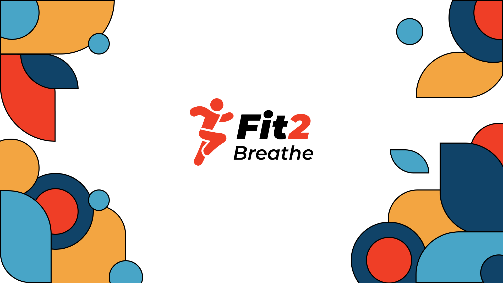
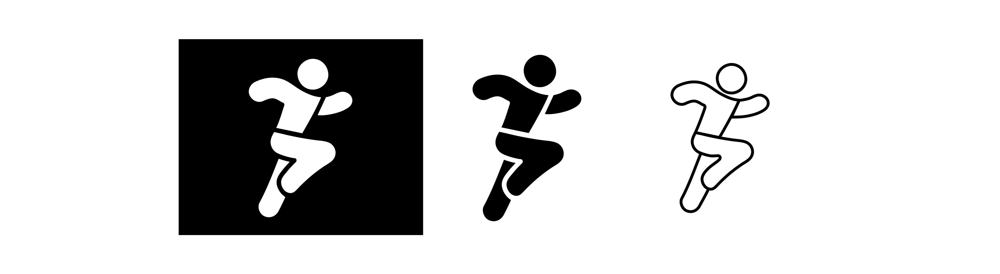
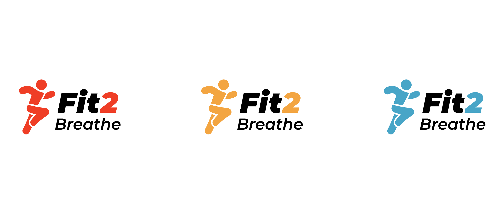
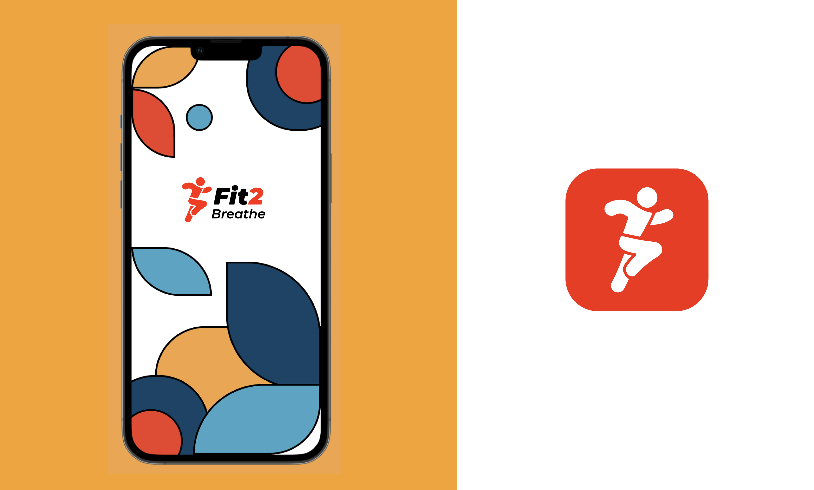
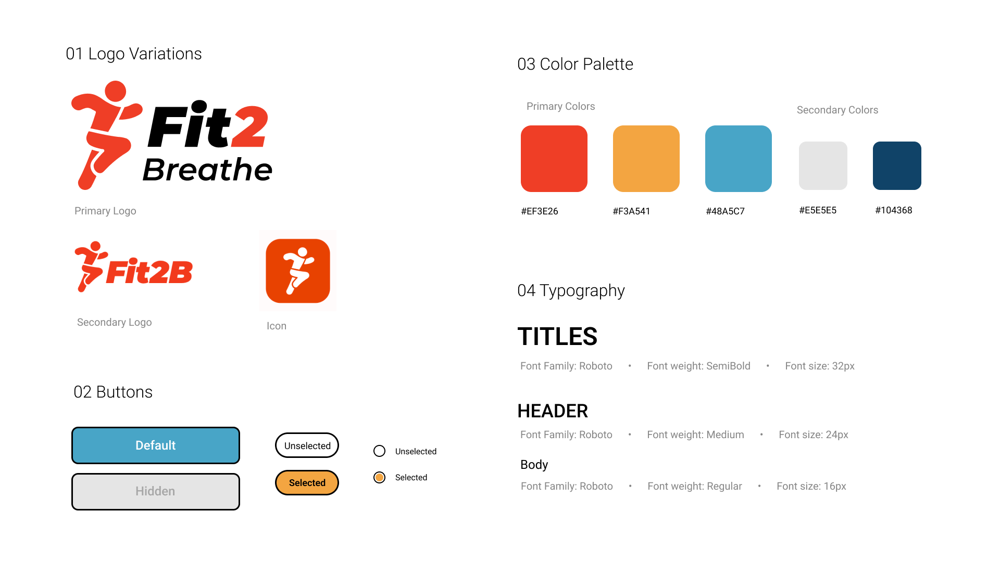
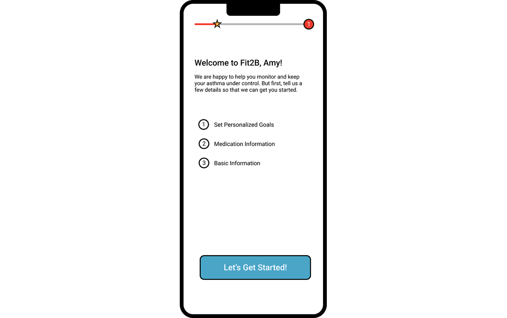
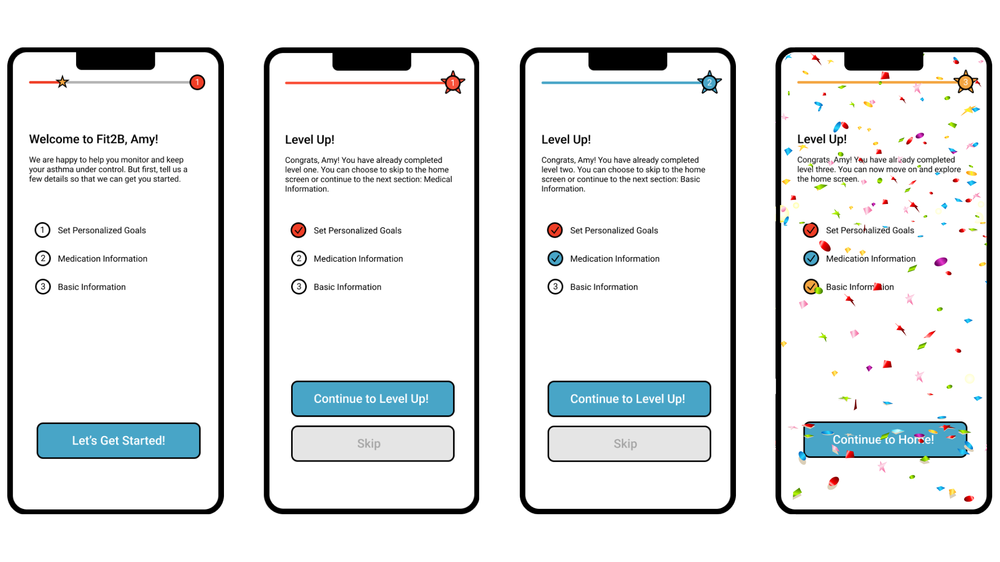

Fit2B
Asthma & Weight Tracker
-
Role:
-
UX/UI Design
Gamification
Brand Identity
-
Category:
-
Internship @ UT Austin
-
Timeline:
-
Jan - June 2022
-
Tools Used:
-
Figma
Adobe Illustrator
Role: UX/UI Design, Gamification, Brand Identity
Category: Internship @ UT Austin
Timeline: Jan 2022 - Current
Tools Used: Figma, Illustrator
Overview
At UT Austin I worked in the Simulation & Game Application Lab as a UX/UI Design Intern. The project I worked on was to build an app which would be used as part of a research study for the School of Nursing.
The Team

Problem
Our user personas targeted teens struggling to manage their asthma. The base and user flow of the app was designed prior to me joining, but it was bare-boned. We needed to conduct user interviews to elicit pain points with the current app flow.
User Pain Points
The top three pain points that I discovered through interviews were:
1. The app design was too "boring"
2. Users did not find the app very useful
3. The onboarding process was too long and unorganized
1. The app design was too "boring"
2. Users did not find the app very useful
3. The onboarding process was too long and unorganized
Brand Identity
In order to increase teen engagement, we needed to make the app inviting and visually appealing. We created mood boards to zero in on the direction we needed to go. Visuals that used primary colors, geometric shapes, and black outlines were particularly appealing to teens. This style also emphasized youthfullness while still maintaining a reasonable level of professionalism.

Logo Design
The logo icon is inspired by the "L" shape of an inhaler with a running motion. My goal with the icon was to create something that was universally recognized, as well as androgynous beacause the product is meant to be used by all. For the full logo, I wanted a font that worked well with the energy of the icon, so I went with something italicized, which perfectly conveyed motion.


Brand Guidelines

Gamification
In order to increase the 'fun' factor for teens going through the onboarding process, I added elements of gamification to it.
While sketching the app interfaces, I was able to discern what screens and features from my initial brainstorm were valuable and what was superficious. I was also able to determine the navigation as well as figure
out a basic idea of how I wanted the UI and visual aesthetics of the app to look. After several iterations, the design was polished enough that I could ask some potential users to go through the screens and flows. They were
able to provide valuable feedback which I made notes of.
Progress Bar
I added a progress bar to give a visual cue of how much is left during each level of the onboarding. Encouraging messages pushed users to continue on.

Levels
By using levels, I was able to turn the whole process of user interaction during onboarding into an exciting journey with different stages. I did this by grouping different questions and steps into three categories: setting personalized goals, medical information, and basic information. This was done tactfully, making the more tedious steps first, and the quick, easy personal questions at the end so users don't get bored.

Takeaways
I learnt a lot from this internship. Particularly, the value of teamwork and collaboration. I had to work with developers and convey my design ideas to them, to code. I also worked with end users and learned how to ask questions
to get their true feedback without leading them to an answer.
Overall, the internship taught me the complex process that goes into creating a live app.